Se trata de una api especializada en la interacción con bases de datos; de hecho, "MongoDB" trabaja con una lógica similar a esta api. Su funcionamiento es parecido al de "localStorage" o "sessionStorage", ya que permite almacenar datos en el navegador, pero con grandes particularidades que la diferencian.
-
Esta api está orientada a objetos; a su vez, los datos de esta se basan en pares de "nombre/valor".
-
Es asíncrona, por lo que se puede acceder y manipular los datos sin la necesidad de recargar la página.
-
Esta api trabaja con los eventos del "DOM", por lo que los resultados o respuestas estarán basados en estos eventos.
Proceso de Creación
La primera acción a tomar para trabajar con esta api es elaborar una solicitud de creación de la base de datos. Para esto existe cierta pauta, la cual consiste en que la constante donde se almacene esta solicitud debe llamarse "IDBRequest"; esto ya que es el nombre designado para indicar que se trata de una base de datos "IndexedDB". Por supuesto que es posible nombrar esta variable de cualquier otra forma, sin embargo, se recomienda aplicar este nombre ya que se considera como buena práctica.
Teniendo en cuenta este aspecto y accediendo al objeto "indexedDB", se utiliza el método ".open()", el cual permite abrir (en caso de que exista) o crear (en caso de que no exista) una base de datos. Este método recibe dos datos para trabajar: el primero corresponde al nombre de la base de datos, mientras que el segundo define la versión de la misma.
Ejemplo
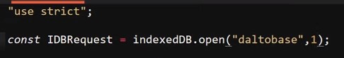
Nota: Definir la versión de la base de datos como "1" tan solo es con el propósito del ejemplo de la petición; este aspecto se desglosará más adelante.
Nota: Si la constante se nombra de la misma forma que "indexedDB", es necesario realizar la solicitud como "window.indexedDB", ya que de lo contrario JavaScript no ubica al objeto; en su lugar, lo interpreta como un llamado a dicha constante.
Una vez realizada la solicitud para la base de datos con el método ".open()", se procede a inicializar una serie de escuchas de eventos; esto ya que algunos de estos se utilizan para definir qué acción realizar en base a cuál sea el resultado de la solicitud del método ".open". Estos eventos son:
-
success: Este evento determina si todo salió correctamente en la solicitud ".open()".
Ejemplo
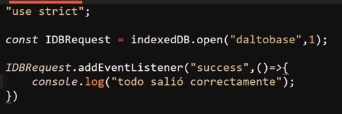
-
error: Este evento se dispara en caso de que surja algún error al acceder a la base de datos.
Ejemplo
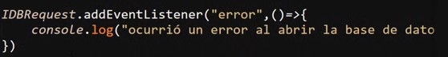
-
upgradeneeded: Se trata de un evento que se dispara en caso de que la base de datos no haya sido creada o se necesite actualizar la versión; por lo tanto, se trata de una comprobación para evaluar la existencia de la base de datos.
Ejemplo
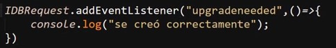
Crear Almacén de Objetos
Un almacén de objetos es una arquitectura de almacenamiento que se caracteriza por guardar los datos como objetos a diferencia de otras metodologías. De esta forma es como trabaja la api "IndexedDB", "MongoDB" y otras bases de datos no relacionales; por lo tanto, un almacén de objetos sería lo que es una tabla para una base de datos relacional.
Un aspecto sumamente importante de los almacenes de objetos es que estos solo pueden ser creados en el momento en que se crea o actualiza la base de datos, razón por la cual la declaración de estos se debe realizar desde el evento "upgradeneeded".
Para crear un almacén de objetos es necesario acceder a la base de datos a través de la propiedad ".result" de la solicitud. Esto se debe a que en la constante "IDBRequest" no se almacena la base de datos en sí, sino la solicitud; la base de datos se obtiene como un resultado exitoso de esta.
Ejemplo
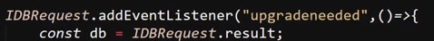
Para crear el almacén de objetos en sí, se utiliza el método "createObjectStore()", el cual recibe dos datos: el primero es el nombre del almacén, mientras el segundo es un objeto de opciones para la "key" (identificador).
Ejemplo
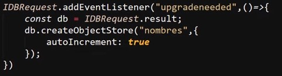
En este caso, se suele definir "autoIncrement: true", lo que significa que por cada objeto almacenado el índice se incrementará automáticamente.
Nota: Una alternativa a "autoIncrement" es "keyPath", el cual permite definir una propiedad del objeto como llave primaria.
Resultado
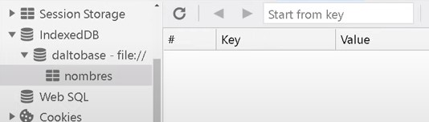
Almacenar objetos
Lo primero para guardar un objeto es utilizar las transacciones, las cuales son operaciones que se realizan en los almacenes de objetos. Cualquier acción como añadir, modificar o eliminar se considera una transacción.
Ejemplo
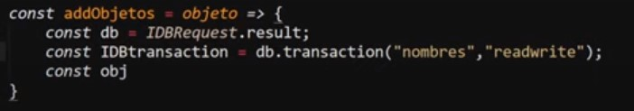
Se usa el método ".transaction" para aperturar una transacción, indicando el nombre del almacén y el tipo de acceso:
-
readwrite: Permite modificar, añadir o eliminar objetos.
-
readonly: Únicamente permite leer los objetos.
Finalmente, se utiliza el método "objectStore" para indicar sobre qué almacén operaremos y el método ".add" para pasar el objeto en cuestión.
Ejemplo
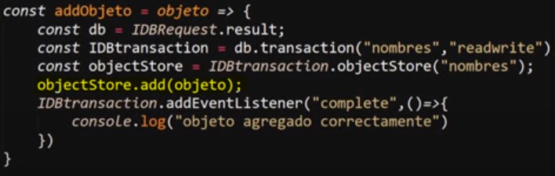
Leer Objetos
Para leer datos se utiliza el método ".openCursor()", el cual permite recorrer los objetos almacenados. Este método también requiere una transacción de tipo "readonly".
Ejemplo
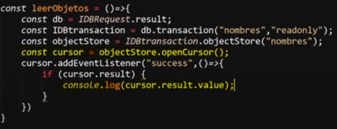
Nota: Si se desea acceder a todos los datos, se aplica el método ".continue()" al resultado del cursor dentro del evento success.
Modificar y Eliminar
Para modificar se utiliza ".put()", que funciona igual que ".add" pero reemplaza el objeto si la llave ya existe. Para eliminar se usa ".delete()", indicando la "key" del objeto.
Ejemplo Eliminar
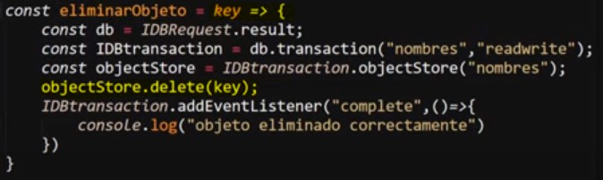
MatchMedia
Esta api permite trabajar con Responsive Design desde JavaScript. Lo más recomendable es limitar su implementación a casos donde CSS no sea suficiente.